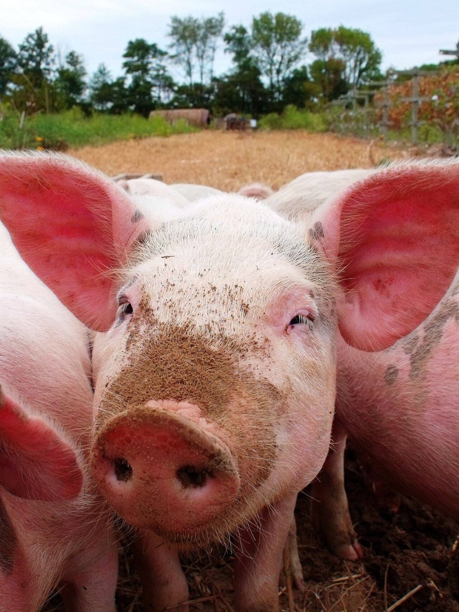
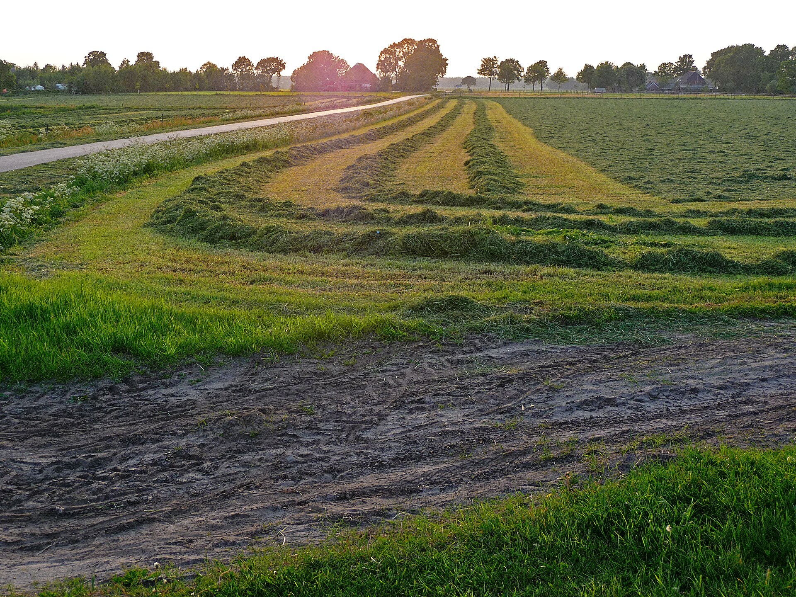
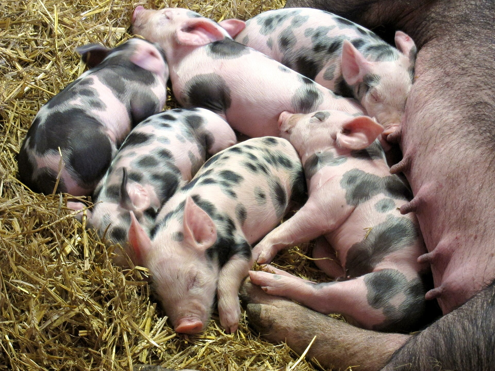
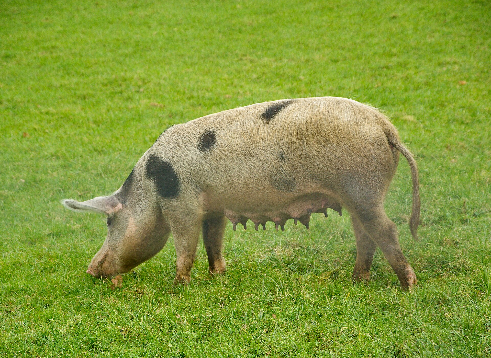

Sensores no galpão
Sensores na porteira de cada baia registram toda entrada e saída, sem anotação em papel.
TCC 2026 · Técnico em Desenvolvimento de Sistemas
Monitoramento em tempo real com IoT, análise preditiva e automação aplicados à suinocultura moderna — transformando dados em decisões.

Arraste para girar · clique num sensor
Leituras do animal simuladas · contagem do curral real
Quanto a sua granja pode render quando nenhum sinal do animal passa despercebido?
Sobre o projeto
O SuinoTech é um sistema de monitoramento inteligente desenvolvido como Trabalho de Conclusão de Curso na Etec Professor Edson Galvão, propondo a digitalização completa do ciclo produtivo suíno — do nascimento ao abate.
Utilizando sensores IoT, microcontroladores, cloud computing e dashboards em tempo real, o projeto endereça os principais gargalos da suinocultura tradicional com tecnologia acessível e escalável.

Do pasto ao painel
Sensores na porteira de cada baia registram toda entrada e saída, sem anotação em papel.
O Arduino envia cada evento pelo USB e o painel atualiza na hora, via WebSocket.
Quando uma baia se aproxima da capacidade máxima, o sistema avisa antes do problema.
Diagnóstico do setor
Identificamos os principais pontos críticos que comprometem a eficiência e rentabilidade das granjas convencionais.

Dependência de registros em papel e observação subjetiva, gerando dados imprecisos e processos lentos com alta margem de erro humano.
Erro humano: altoDificuldade em detectar doenças precocemente coloca em risco todo o plantel. A biosseguridade depende de vigilância constante que humanos não conseguem manter.
Risco epidêmico: críticoMá gestão de ração e medicamentos. Variações climáticas sem ajuste automatizado resultam em perdas financeiras silenciosas e acumulativas.
Perda estimada: 15–20%Sem integração tecnológica, o Ganho de Peso Diário (GPD) fica abaixo do potencial genético do plantel, comprometendo a rentabilidade total da operação.
Potencial ocioso: elevadoNossa solução
Uma plataforma integrada que conecta sensores físicos a dashboards inteligentes, dando ao produtor visibilidade total e controle preciso de sua operação.
Sensores de temperatura, peso e atividade monitoram cada animal continuamente, disparando alertas automáticos diante de anomalias.
Temperatura, umidade e ventilação do galpão são ajustados em tempo real pelos dados dos sensores, mantendo o conforto térmico ideal.
Algoritmos identificam padrões que precedem doenças, antecipando intervenções veterinárias antes que surtos se desenvolvam.
Histórico completo por animal: nascimento, pesagens, medicações, ciclos reprodutivos e projeções de abate com dados auditáveis.
Painel centralizado com indicadores-chave, tendências, alertas e relatórios gerados automaticamente para tomada de decisão ágil.
Painel de controle
Dados reais recebidos do Arduino em tempo real, via WebSocket. Sem hardware conectado? Use os botões de simulação no card de status.
A conexão com o Arduino é feita direto pelo navegador (Chrome/Edge) — não precisa configurar porta serial em arquivo nenhum.
Cronograma
Levantamento de necessidades com produtores e revisão bibliográfica sobre suinocultura e IoT.
Montagem do hardware com Arduino/ESP32, sensores DHT22, balança load cell e módulo RFID.
Criação do dashboard, integração com backend e validação do sistema de alertas em ambiente controlado.
Apresentação final para banca avaliadora, demonstração ao vivo do sistema e publicação do artigo técnico.
Stack tecnológico
Cada camada da solução foi construída com ferramentas selecionadas para confiabilidade, custo-benefício e aplicabilidade em contexto rural.
Sensores e microcontroladores no galpão
Como o dado sai do galpão
Recebe, guarda e distribui os eventos
O que o produtor vê e usa
Tendências, anomalias e previsões
Onde o sistema roda
Os autores
Alunos do Curso Técnico em Desenvolvimento de Sistemas — Etec Professor Edson Galvão, Itapetininga - SP.

Projeto aberto
Acesse a documentação técnica completa, código-fonte e relatório científico do projeto SuinoTech.